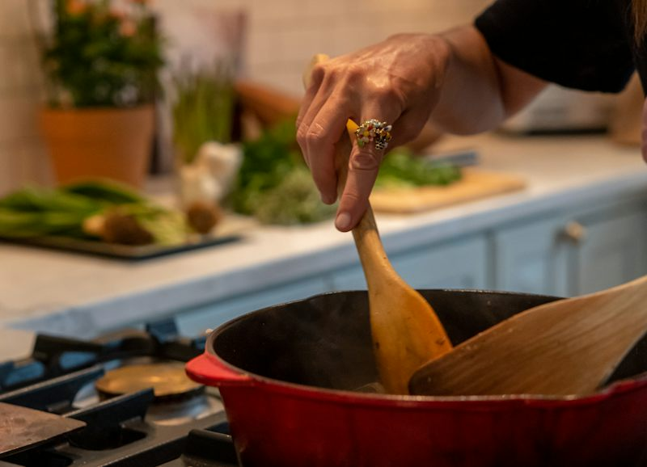
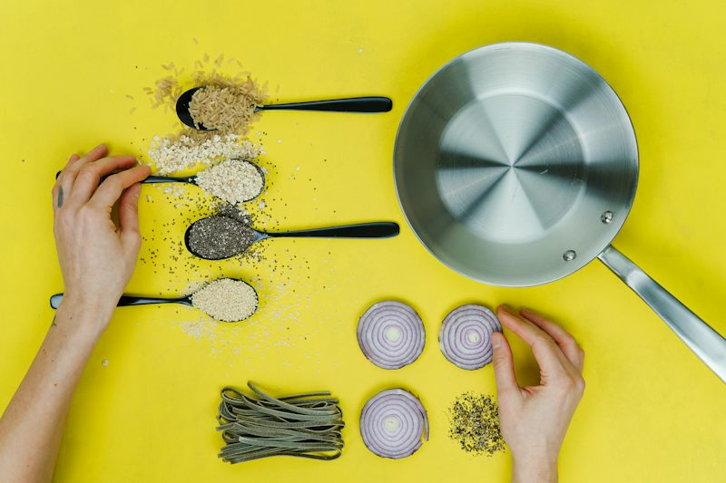

Teacher · Session card (Ficha de Sesión)
| Campo | Valor |
|---|---|
| Nivel / MCER | Intermedio 2 · GT English Path Nivel 08 · B1.2 · modo Interacción (+ Mediación: explicar un proceso a alguien que no lo conoce) |
| Bloque / riesgo / temperatura | Bloque 2 PROCESS · sesión 10 de 32 · riesgo Medio (desacuerdo ligero y respetuoso: seguir los pasos vs. saltarse pasos; nada político, religioso ni personal sensible) · temperatura Spicy · contexto T (trabajo + vida diaria) |
| Objetivo | Explicar un proceso corto en orden (receta, trámite, arranque de turno, reservar un servicio, instalar algo) para que el oyente pueda hacerlo. |
| Punto de lengua (uno) | Conectores de secuencia: first, then, after that, before, finally (+ next, at the end). Patrón: conector + coma + acción (First, open the box.). Límite: sin pasiva productiva compleja, sin condicionales de 2º/3º, sin reported questions, sin relativas complejas. |
| Léxico nuevo (12) | step · process · follow the instructions · make sure · wait for · start · finish · skip a step · in the right order · mix · connect · install |
| Reciclado (declarado) | S01 (9/10): update, send an update, status, pending, booking, confirm, reschedule, delay, cause a delay · S05: invoice, approve, attach, receipt, due date, forward · S06: backup plan (+ make sure, que aquí es núcleo) · S02: delivery (preguntas) · S07: has been … / hasn’t been … yet / still needs to be … (lectura y misión) · S09: presente pasivo de rutina (“it is cleaned every night”, solo receptivo) |
| Dinámicas (4 familias) | VOC-05 Collocation Bingo (COLECCIÓN) · GRM-01 Bet the Sentence (APUESTA, etapa Mecánica + Meaningful con tarjetas que se reordenan) · SPK-02 Three Rounds, Same Question (ESCALADA) · LIS-01 Spot the Lie (IMPOSTOR) |
| Disagreement hook | “Always follow the steps exactly” vs “Experienced people can skip steps”. Regla: una razón por persona, sin debate largo. |
| Evidencia | Misión “The Mini Manual”: 3 procesos × 5 movimientos = 15; éxito ≥12/15, sin leer, ≥4 conectores distintos por proceso. |
| Audio | 18 clips (9 vocab, 6 listening, 3 pronunciación). Estado: scripts listos, audio pendiente. Hasta entonces la página usa la voz del navegador con aviso visible. |
Warm-up · Follow or Skip?

Two cooks, one pot. Who is right?
“Always follow the steps exactly.” — “Experienced people can skip steps.”
For each job, choose: follow every step, or let an expert skip one
0 / 5 decidedGroup: find ONE ticket where you and your partner disagree. Each person gives one reason. No long debate!
1:1: tell the teacher your hardest ticket. The teacher takes the other side for ONE reason.
Teacher notes · §1 Warm-up
Pedagógica
- Activación pura, sin corregir: acepta cualquier forma. Tu única meta es que hablen desde el minuto 1. Anota en silencio si alguien ya dice “first… then…” de forma espontánea (línea base).
- Riesgo Medio: el desacuerdo es ligero. Regla de oro: UNA razón por persona y se pasa al siguiente ticket. Si alguien se acalora, reencuadra: “the process, not the person”.
- Los 5 tickets mezclan vida diaria (egg, phone, shelf) y trabajo (machine, invoice). “Start a machine” y “Send an invoice” casi siempre salen “follow”: pregunta qué pasa si alguien se salta un paso.
Engagement
- Pregunta anécdota: “¿Qué paso te saltaste una vez y te costó caro?” Deja que lo cuenten con las palabras que tengan.
- Usa la barra de balance como marcador: “Today the group is 3–2 for Follow.”
Crecimiento
- Gancho de venta suave: “En 55 minutos vas a poder explicar un proceso de tu trabajo en orden, sin leer y sin que te pregunten ‘¿y luego?’.”
- Esto se ve como progreso en el cliente: menos preguntas de aclaración de sus compañeros y menos errores por pasos mal explicados.
Vocabulary · Collocation Bingo
The word kit: tap each chip, hear it, say it
0 / 12 seenAudio: recorded files play when available; otherwise your browser’s voice reads the text.
Bingo: mark a square only when SOMEONE ELSE says it
Lines: 0 / 83 rules. 1. Your partner speaks, you listen: tap a square when you HEAR that chunk. 2. A line of three = a point, but you bank it only after you say ONE sentence with two chunks of that line. 3. A full card = a JOKER for the Mission.
Group: A has Card A, B has Card B. A speaks 2 min on the prompt while B marks Card B. Then swap.
1:1: the teacher speaks and hides the chunks of your card inside a short explanation. You hunt them. Then you speak and the teacher hunts yours.
Choose the best chunk
Teacher notes · §2 Vocabulary
Pedagógica
- VOC-05 fiel al catálogo: el cuadro se marca cuando OTRO usa el chunk, no cuando lo usas tú. Obliga a escuchar. El punto de línea se banca solo si el marcador dice una oración con dos chunks de esa línea (así el punto sale de producir, no de adivinar).
- Cada tarjeta tiene 6 chunks nuevos (A) o 5 nuevos (B) + 3–4 reciclados (send an update, confirm the booking, approve the invoice, cause a delay, attach the receipt, have a backup plan, reschedule the meeting). Léxico total nuevo: 12.
- 1:1 (caza contra el maestro): modelo para ti, 60 s, Card A: “Let me explain how I send a report. First, follow the instructions on the template. Wait for ten minutes if the file is big, and never skip a step. Then mix … no — connect the cable… (error a propósito) …” Siembra los 9 chunks; el alumno los caza y debe decir una oración por línea.
- Explicación tuya ≤5 min en toda la sesión: aquí 0. El kit se descubre solo.
Engagement
- El comodín tiene valor real: en la Misión desbloquea la ayuda de conectores. Dilo antes de empezar el bingo.
- Cierre en voz alta (close_out): “I banked __ lines. My best sentence was ___.”
Crecimiento
- “Estos 12 chunks aparecen en el reading, el listening y la misión de hoy; ≥70 % regresa en S11–S16.”
- Señal de progreso: el alumno ya no dice “do the steps” sino “follow the instructions” / “skip a step”.
Language · Order words for steps
Nico explains his fried rice. What helps you follow?

Climb the stairs: one word for each step
1 · What it is
Order words tell your listener WHICH step comes now. At the end = the last step too.
2 · How to use it
Connector + comma + action. You can add a person: First, I open the box. Use the simple form for steps.
3 · BEFORE goes the other way
Read comes FIRST. Before needs a subject + verb: before you start (not before start).
| Form | Example | |
|---|---|---|
| ＋ | Connector, action | First, check the status. · Then I send an update. |
| － | Don’t / Never + action | Don’t skip a step. · Never skip the first step. |
| ? | What do you do …? | What do you do after that? · What do you do before you start? |
Careful: In the final → Finally / At the end · Before start → Before you start · Then you are choosing → Then you choose.
Bet the Sentence: bet BEFORE you judge
Bank: 03 rules. 1. Bet 1, 2 or 3 points. 2. Say “correct” or “wrong”. Right call = +bet. Wrong call = −bet (−1 more if you “fix” a correct sentence). 3. If you call a wrong sentence wrong, SAY the fixed sentence out loud: +1.
The cards are mixed up. Put the steps in order, then say them
Process: install a new app. Use ▲ ▼ to move a card. Then say all six sentences: First, open the app store. Then …
Teacher notes · §3 Language
Pedagógica
- Reparto de los 12 min: descubrir 2 (el chat resalta las palabras) · herramienta 3 (escalera + tarjetas qué/cómo/para qué, afirmativo/negativo/pregunta) · mecánica 4 = ⅓ del bloque (Bet the Sentence) · uso meaningful 3 (tarjetas que se reordenan, con apoyo decreciente). Tu explicación continua ≤3 min.
- GRM-01 fiel: se apuesta antes de discutir. Puntaje: lo apostado; menos puntos por “corregir” una oración que estaba bien; +1 por decir el arreglo (producción). Cierre declarado en voz alta.
- Errores típicos del español: before start, in the final (calco de “al final”), then you are choosing (gerundio por presente simple). Corrige solo el punto del día, el resto se anota para el wrap-up.
- Tarjetas que se reordenan: nivel 1 con conectores visibles, nivel 2 sin conectores (el alumno los pone), nivel 3 solo iconos (casi comunicativo). Si falla el orden, pide que lo diga en voz alta: el oído detecta el error.
Engagement
- Apuesta alta = mini-suspenso. Pregunta al que apostó 3: “Why 3?”.
- Cuando completen el orden, hagan una ronda rápida “who can say it fastest without breaking the order?” (sin premiar velocidad en puntos).
Crecimiento
- “Con estos cinco conectores cualquier proceso de tu trabajo se explica en 60 segundos.” Es el activo más fácil de ver para el cliente corporativo (instrucciones claras = menos retrabajo).
- Guarda tus anotaciones de errores: sirven para la Correction Bounty en S15 y S31.
Reading · The Pinned Notes
Answer without looking back, then check
Teacher notes · §4 Reading
Pedagógica
- Tarjetas de 47 y 54 palabras (≤60). Reciclan status, update, send an update, booking, confirm, wait for, make sure, start, connect y los estatus de S07 (“hasn’t been sent yet”, “has been confirmed”). “It is cleaned every night” es pasiva rutinaria de S09: solo receptiva.
- La tarea de buscar y tocar los conectores va primero (30 s). Luego las 5 preguntas; la 5 (True/False) obliga a releer “Don’t skip a step!”.
Engagement
- Pregunta personal: “¿Qué nota pegarías tú en tu área de trabajo?”.
Crecimiento
- Esta nota de turno es un formato real: el alumno puede llevar su propia versión a su equipo. Pídele que la escriba en inglés como tarea opcional.
Listening · Spot the Lie
3 rules. 1. Read the wall card for 30 seconds. 2. Listen to Joy: she trains Ben, but THREE things she says are different from the card. 3. Tap the three steps with a lie, then say what Joy should say.
Start of shift
Audio: recorded files play when available; otherwise your browser’s voice reads the text.
Two quick questions
Say it with the same rhythm
Teacher notes · §5 Listening · [PARA GRABAR]
Pedagógica
- Guion literal (136 palabras, 2 hablantes; ver audio_scripts/s10_ElevenLabs_Scripts.txt). Escenario: primer día de Ben en la Línea 3; Joy lee el arranque de turno de memoria. Hablantes: Joy (mujer, inglés filipino, ritmo medio, cálida); Ben (hombre, inglés americano, ritmo natural). Acento no nativo en esta sesión. Marcas: [background: machine hum] suave; [pause] tras “step by step” y tras “Press the red button.”
- Clave: mentiras = paso 2 (“red button” vs GREEN), paso 3 (“ten minutes” vs TWO), paso 6 (“supervisor” vs QUALITY). Global: Joy entrena a un operador nuevo en el arranque de turno. Detalle: revisar el paro de emergencia primero y no saltarse ese paso.
- Lengua objetivo ≥2 veces sin subrayar: first, then, after that, next, before, finally (todas aparecen). Léxico: make sure, skip a step, wait for, connect, start, status, pending, step by step.
- Las mentiras son verificables con la tarjeta de pared: no requieren conocimiento técnico. Penaliza flags extra (−1).
Engagement
- Reproduce una vez completa; la segunda vez, por líneas. Pausa tras cada línea de Joy y pregunta: “Does that match the card?”.
Crecimiento
- “Escuchar una instrucción equivocada y detenerla es una habilidad de seguridad real en planta.” Úsalo como argumento de venta del listening corporativo.
Speaking · Three Rounds, Same Question
Pick ONE big question. Answer it three times
3 rules. 1. Same question, three listeners, 2 minutes each. 2. The goal is to say it BETTER the third time, not to say something different. 3. After each round, tick what you improved.
Group: you change partner after every round (breakout rooms or pairs).
1:1: the teacher plays Mia, then Leo, then Ms. Cruz.
Question deck: ask your partner, then follow up
Teacher notes · §6 Speaking
Pedagógica
- SPK-02 fiel: la MISMA pregunta con tres interlocutores, 2 min cada una. La meta declarada es decirlo MEJOR la 3.ª vez (más orden, más precisión), no decir otra cosa. Puntaje por producir: cada ronda suma una marca por mejora autoevaluada (0–4); gráfica de crecimiento.
- Escalera: R1 first/then/finally · R2 + un tiempo o número + un “make sure” · R3 + before + cierre con resultado, sin notas. Mia (no sabe nada) pregunta “Sorry, what?” una vez; Leo (con prisa) pide solo lo clave; la Sra. Cruz (supervisora) pregunta “Before or after?”.
- Deck de 14 preguntas (3 grandes + 11), todas con 2 follow-ups. Cubre ~50 % trabajo / 50 % vida. En 1:1 usa el deck cuando acabe el round 3 y quede tiempo.
- Correcciones: solo diferidas, anota 2–3 errores de conectores (before start, in the final) para la Correction Bounty.
Engagement
- Anuncia: “Round 3 is the one that counts — no notes.” Pide al alumno decir en voz alta qué mejoró (close_out).
Crecimiento
- Esto es lo que ve el cliente: la misma explicación pasó de “lista de pasos” a “instrucción que otra persona puede ejecutar”. Guarda la puntuación 1→3: en S16 (Checkpoint 2, también SPK-02) se compara.
Mission · The Mini Manual
Someone has to DO this tomorrow. Explain the whole process so they don’t need to call you.
Group: A explains the route; B listens, ticks the moves and asks ONE question (“What do I do before …?”). Swap for the next case.
1:1: you explain the route. The teacher ticks the moves and asks ONE question.
Success: at least 12 of 15 moves in the three processes, without reading the card word for word.
Teacher notes · §7 Mission
Pedagógica
- Producto de evidencia: el alumno explica 3 procesos (invoice = trabajo, car service = vida diaria, scanner = trabajo/hogar). 5 movimientos por proceso, 15 en total; éxito ≥12/15. Un movimiento cuenta solo si lo dice el alumno en voz alta.
- La tarjeta muestra solo palabras clave (sin oraciones) para que no lea. Cierre de estatus (S07): “The invoice has been sent. It hasn’t been approved yet. It still needs to be forwarded.” Modelo visible solo en vista maestro.
- Comodín (Bingo completo): muestra la barra de conectores. Es un andamio válido; sin él, el alumno trabaja solo con las palabras clave.
- Pasiva de S09 opcional como mejora: “The invoice is checked before it is sent.”
Engagement
- Anuncia en voz alta: “__ of 15 moves. Mission complete!”. Si hay tiempo, deja que elijan su propio proceso de trabajo para el tercer intento.
Crecimiento
- Esta misión es el mejor “antes/después” para vender: lo que explican hoy son tareas reales de su puesto. Sugiere un taller de SOPs (procedimientos) para su equipo.
- Conecta con S11: “Who is the person who handles this process?” (relativas con who).
Wrap-up · Last step
✓ Success
↑ Upgrade
✎ Repair
↻ Next use
Where will you use first · then · finally this week? Say it to your partner.
60 seconds · 5 questions — say the answer before you click
Today I can… (tick, then say it)
You can explain a short process, step by step.
Homework: write or record a 6-step process from YOUR job or home, using first, then, after that, before and finally. Bring the name of the person who handles that process: Session 11 · The Person Who Handles This.
Teacher notes · §8 Wrap-up
Pedagógica
- Success → Upgrade → Repair → Next use. Máximo 2 aciertos y 3 correcciones de alto valor (before you, finally/at the end, presente simple en pasos). Respuestas del quiz: Before · Then · At the end · wait for · Then, you choose.
- Close_out: el alumno declara en voz alta lo que ahora puede hacer. Registra en el portal con “Mark session complete”.
Engagement
- “At minute 1 you said whether to skip steps. At minute 58 you explained a process better than the first time.”
Crecimiento
- La tarea es el borrador de un SOP real. Si el cliente lo trae, es un caso para el programa corporativo (más sesiones de instrucciones y seguridad).
- Léxico de hoy para reciclar en S11+: step · process · follow the instructions · make sure · wait for · start · finish · skip a step · in the right order · mix · connect · install.